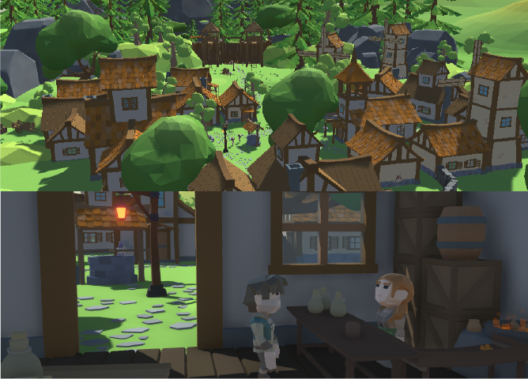
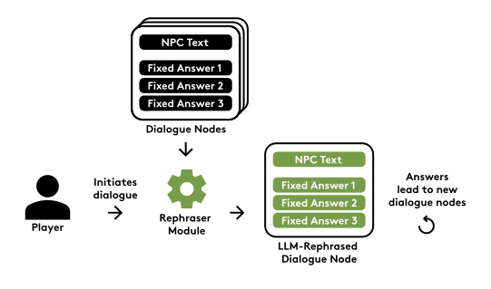
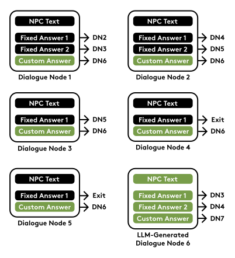
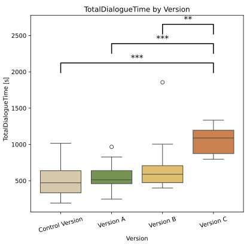
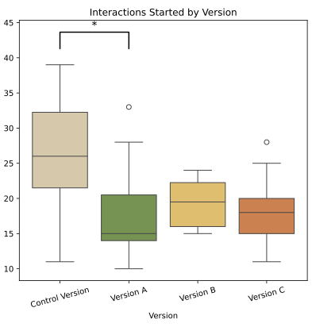
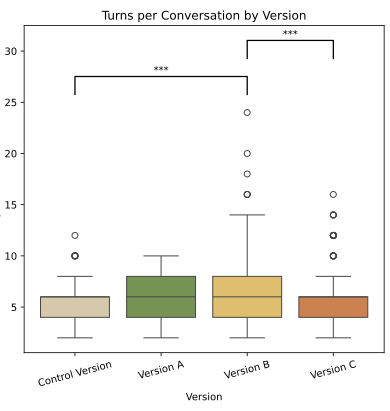

Quest of Aivengarde: Comparative Study of Player Experience Across LLM Dialogue Systems
NPCs carry the story — can LLMs help them carry it better?
From Façade to modern branching trees, NPC dialogue has always shaped immersion, narrative, and agency.
LLMs now let NPCs generate contextual, adaptive dialogue in real time — but their actual effect on player experience is still largely unmeasured.
AI Dungeon, CALYPSO, CoAuthor show it's technically feasible.
What's missing: controlled, empirical comparison of dialogue designs under identical gameplay conditions.
Two research questions
RQ1 — How do different LLM-driven dialogue systems affect player engagement and immersion in narrative games?
RQ2 — What design trade-offs emerge between authorial control, system stability, and player agency?
Quest of Aivengarde
Same quest line, four dialogue systems

Goblins stole the town's food. Players talk to NPCs to solve challenges in identical order.
Only the dialogue system changes between versions
From fixed tree to LLM rephrasing
Control — authored tree, no LLM

Version A — same tree, LLM rephrases the lines
From hybrid input to fully open dialogue
Version B — pick a reply, or type free text
Version C — no tree at all, just conversation
A modular, multi-agent LLM backend
Function Call Module: detects quest-relevant actions
Quest Completion Module: judges Completed / Failed / None
Rephraser Module: restyles authored lines (Version A)

Method
64 participants, one version each
| Participants | 64 (62 analyzed) |
|---|---|
| Mean age | 25.2 (SD 4.57) |
| Per version | Control 16 · A 15 · B 16 · C 15 |
| Session length | 10–30 minutes |
Between-subjects design: each participant played only one dialogue system, randomly assigned.
Data collected
Behavioral logs
dialogue text & timing · movement · area
transitions · quest outcomes · LLM latency
Post-game survey
24 Likert items + 4 open questions, across
various themes
ANOVA / Kruskal–Wallis for quantitative comparisons; inductive thematic coding for the open-ended feedback.
Results
Open-ended dialogue leads to longer play

Version C produced significantly more total dialogue time than every other version (p < .001, η² = 0.39).
Once dialogue time is subtracted, playtime differences vanish — the extra time is all conversation, not slower gameplay.
Differences in conversations


- Control players start more conversations
- Version B holds the longest per-conversation exchanges
- Version C wins on total volume
Survey results
Three survey items showed significant differences: interest in talking to NPCs, enjoyment of the dialogue system, and perceived unnatural moments.
Positive feedback praised Version C's freedom and immersion, and Version B's balance of structure and freedom.
Across all versions: limited agency, occasional model misunderstanding, and — in Version B — dialogue inconsistency and UI friction were the main complaints.
Casual players, especially, lean into open-ended dialogue
Over 95% of Version C's free-text input stayed grounded and in-character
Casual players may value conversational immersion over efficiency; hardcore players may prioritize clarity and predictable progress instead
A Design Framework
Two axes
Control and A sit stable and structured, Version C trades stability for freedom and immersion, and Version B is somewhat in between
Structure and freedom trade off
More conversational freedom → more immersion, more engagement.
More conversational freedom → more variability, latency, and risk of drift.
There's no universally "best" version
Match the system to the audience and the narrative's tolerance for surprise.
Limitations
- 15–16 participants per condition
- Between-subjects design: no one directly compared two versions themselves
- One RPG, one narrative, one set of quests
Conversational Freedom is a design decision
Open-ended LLM dialogue seems to boosts engagement and immersion but it comes with real costs in stability and predictability.
Future work: long/short-term memory for NPCs, chain-of-thought prompting for reasoning, within-subject comparisons, and a broader, more diverse player sample.